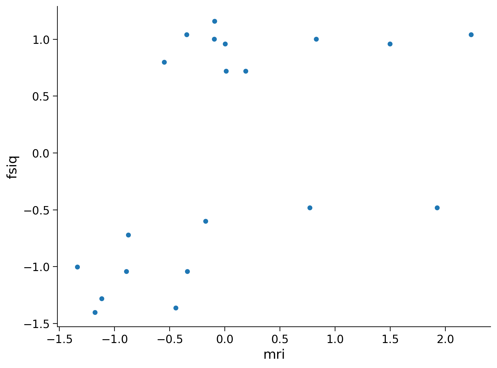
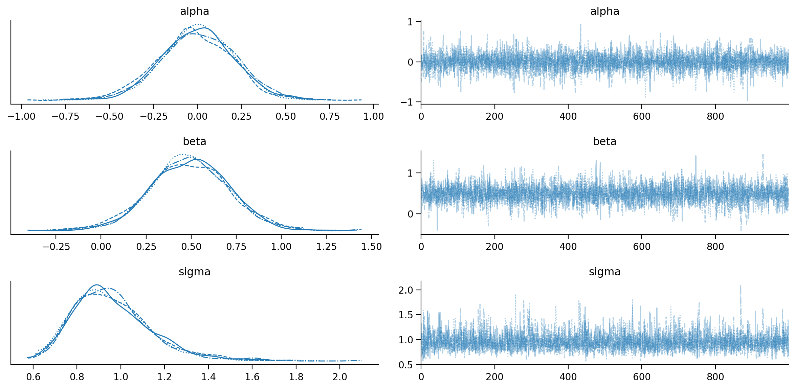
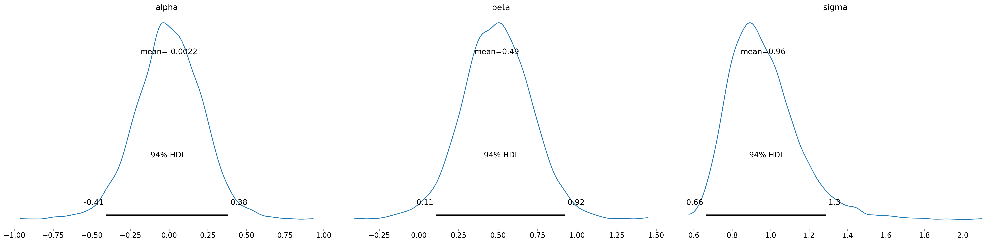

✏️ Esercizi#
Stiamo studiando la relazione tra la grandezza del cervello e il Quoziente d’Intelligenza (Full Scale Intelligence Quotient, FSIQ) in un gruppo di studenti universitari. I dati provengono da uno studio che ha utilizzato scansioni MRI per misurare la grandezza del cervello.
Riporto qui sotto la descrizione del set di dati.
The data are based on a study by Willerman et al. (1991) of the relationships between brain size, gender, and intelligence. The research participants consisted of 40 right-handed introductory psychology students with no history of alcoholism, unconsciousness, brain damage, epilepsy, or heart disease who were selected from a larger pool of introductory psychology students with total Scholastic Aptitude Test Scores higher than 1350 or lower than 940. The students in the study took four subtests (Vocabulary, Similarities, Block Design, and Picture Completion) of the Wechsler (1981) Adult Intelligence Scale-Revised. Among the students with Wechsler full-scale IQ’s less than 103, 10 males and 10 females were randomly selected. Similarly, among the students with Wechsler full-scale IQ’s greater than 130, 10 males and 10 females were randomly selected, yielding a randomized blocks design. MRI scans were performed at the same facility for all 40 research participants to measure brain size. The scans consisted of 18 horizontal MRI images. The computer counted all pixels with non-zero gray scale in each of the 18 images, and the total count served as an index for brain size. The dataset and description are adapted from the Data and Story Library (DASL) website.
In questa analisi, ci concentreremo sui dati relativi ai maschi, cercando di capire se vi è una associazione positiva tra la grandezza del cervello (MRI) e il FSIQ. Si usi un’analisi di regressione con FSIQ come variabile dipendente e MRI come predittore.
Si trovi la distribuzione a posteriori del parametro \(\beta\). (a) Si trovi l’intervallo di credibilità a posteriodi HDI al 95% per \(\beta\). (b) Si trovi la probabilità a posteriori che \(\beta\) sia positivo. (c) Si interpretino i risultati.
Prima di eseguire l’analisi di regressione, si standardizzino i dati.
Soluzione#
import pymc as pm
import pandas as pd
import seaborn as sns
import numpy as np
import matplotlib.pyplot as plt
import arviz as az
# Impostazione del seme per la riproducibilità
np.random.seed(84735)
%config InlineBackend.figure_format = 'retina'
%load_ext watermark
RANDOM_SEED = 42
rng = np.random.default_rng(RANDOM_SEED)
plt.style.use("https://raw.githubusercontent.com/NeuromatchAcademy/course-content/main/nma.mplstyle")
brain_data = pd.read_csv("../data/brain_data.csv")
brain_data.head()
| ID | GENDER | FSIQ | VIQ | PIQ | MRI | IQDI | |
|---|---|---|---|---|---|---|---|
| 0 | 2 | Male | 140 | 150 | 124 | 1001121 | Higher IQ |
| 1 | 3 | Male | 139 | 123 | 150 | 1038437 | Higher IQ |
| 2 | 4 | Male | 133 | 129 | 128 | 965353 | Higher IQ |
| 3 | 9 | Male | 89 | 93 | 84 | 904858 | Lower IQ |
| 4 | 10 | Male | 133 | 114 | 147 | 955466 | Higher IQ |
# Filtraggio dei dati per i maschi
males = brain_data[brain_data['GENDER'] == 'Male']
males.shape
(20, 7)
# Standardizzazione di MRI e FSIQ
males['fsiq'] = (males['FSIQ'] - males['FSIQ'].mean()) / males['FSIQ'].std()
males['mri'] = (males['MRI'] - males['MRI'].mean()) / males['MRI'].std()
/var/folders/cl/wwjrsxdd5tz7y9jr82nd5hrw0000gn/T/ipykernel_37723/2956472145.py:2: SettingWithCopyWarning:
A value is trying to be set on a copy of a slice from a DataFrame.
Try using .loc[row_indexer,col_indexer] = value instead
See the caveats in the documentation: https://pandas.pydata.org/pandas-docs/stable/user_guide/indexing.html#returning-a-view-versus-a-copy
males['fsiq'] = (males['FSIQ'] - males['FSIQ'].mean()) / males['FSIQ'].std()
/var/folders/cl/wwjrsxdd5tz7y9jr82nd5hrw0000gn/T/ipykernel_37723/2956472145.py:3: SettingWithCopyWarning:
A value is trying to be set on a copy of a slice from a DataFrame.
Try using .loc[row_indexer,col_indexer] = value instead
See the caveats in the documentation: https://pandas.pydata.org/pandas-docs/stable/user_guide/indexing.html#returning-a-view-versus-a-copy
males['mri'] = (males['MRI'] - males['MRI'].mean()) / males['MRI'].std()
# Diagramma a dispersione
sns.scatterplot(data=males, x='mri', y='fsiq')
<Axes: xlabel='mri', ylabel='fsiq'>

# Dati per il modello
data = {
'N': len(males['fsiq']),
'x': males['mri'].values,
'y': males['fsiq'].values
}
df = pd.DataFrame(data)
df.head()
| N | x | y | |
|---|---|---|---|
| 0 | 20 | 0.827481 | 1.000548 |
| 1 | 20 | 1.494895 | 0.960526 |
| 2 | 20 | 0.187754 | 0.720394 |
| 3 | 20 | -0.894226 | -1.040570 |
| 4 | 20 | 0.010921 | 0.720394 |
# Definizione del modello
with pm.Model() as model:
alpha = pm.Normal("alpha", 0, 2.5)
beta = pm.Normal("beta", 0, 2.5)
sigma = pm.HalfNormal("sigma", 10)
mu = alpha + beta * data["x"]
y_obs = pm.Normal("y_obs", mu, sigma, observed=data["y"])
with model:
idata = pm.sample()
---------------------------------------------------------------------------
KeyboardInterrupt Traceback (most recent call last)
Cell In[9], line 2
1 with model:
----> 2 idata = pm.sample()
File ~/opt/anaconda3/envs/pymc_env/lib/python3.11/site-packages/pymc/sampling/mcmc.py:689, in sample(draws, tune, chains, cores, random_seed, progressbar, step, nuts_sampler, initvals, init, jitter_max_retries, n_init, trace, discard_tuned_samples, compute_convergence_checks, keep_warning_stat, return_inferencedata, idata_kwargs, nuts_sampler_kwargs, callback, mp_ctx, model, **kwargs)
686 auto_nuts_init = False
688 initial_points = None
--> 689 step = assign_step_methods(model, step, methods=pm.STEP_METHODS, step_kwargs=kwargs)
691 if nuts_sampler != "pymc":
692 if not isinstance(step, NUTS):
File ~/opt/anaconda3/envs/pymc_env/lib/python3.11/site-packages/pymc/sampling/mcmc.py:239, in assign_step_methods(model, step, methods, step_kwargs)
231 selected = max(
232 methods_list,
233 key=lambda method, var=rv_var, has_gradient=has_gradient: method._competence( # type: ignore
234 var, has_gradient
235 ),
236 )
237 selected_steps.setdefault(selected, []).append(var)
--> 239 return instantiate_steppers(model, steps, selected_steps, step_kwargs)
File ~/opt/anaconda3/envs/pymc_env/lib/python3.11/site-packages/pymc/sampling/mcmc.py:140, in instantiate_steppers(model, steps, selected_steps, step_kwargs)
138 args = step_kwargs.get(name, {})
139 used_keys.add(name)
--> 140 step = step_class(vars=vars, model=model, **args)
141 steps.append(step)
143 unused_args = set(step_kwargs).difference(used_keys)
File ~/opt/anaconda3/envs/pymc_env/lib/python3.11/site-packages/pymc/step_methods/hmc/nuts.py:180, in NUTS.__init__(self, vars, max_treedepth, early_max_treedepth, **kwargs)
122 def __init__(self, vars=None, max_treedepth=10, early_max_treedepth=8, **kwargs):
123 r"""Set up the No-U-Turn sampler.
124
125 Parameters
(...)
178 `pm.sample` to the desired number of tuning steps.
179 """
--> 180 super().__init__(vars, **kwargs)
182 self.max_treedepth = max_treedepth
183 self.early_max_treedepth = early_max_treedepth
File ~/opt/anaconda3/envs/pymc_env/lib/python3.11/site-packages/pymc/step_methods/hmc/base_hmc.py:109, in BaseHMC.__init__(self, vars, scaling, step_scale, is_cov, model, blocked, potential, dtype, Emax, target_accept, gamma, k, t0, adapt_step_size, step_rand, **pytensor_kwargs)
107 else:
108 vars = get_value_vars_from_user_vars(vars, self._model)
--> 109 super().__init__(vars, blocked=blocked, model=self._model, dtype=dtype, **pytensor_kwargs)
111 self.adapt_step_size = adapt_step_size
112 self.Emax = Emax
File ~/opt/anaconda3/envs/pymc_env/lib/python3.11/site-packages/pymc/step_methods/arraystep.py:164, in GradientSharedStep.__init__(self, vars, model, blocked, dtype, logp_dlogp_func, **pytensor_kwargs)
161 model = modelcontext(model)
163 if logp_dlogp_func is None:
--> 164 func = model.logp_dlogp_function(vars, dtype=dtype, **pytensor_kwargs)
165 else:
166 func = logp_dlogp_func
File ~/opt/anaconda3/envs/pymc_env/lib/python3.11/site-packages/pymc/model/core.py:618, in Model.logp_dlogp_function(self, grad_vars, tempered, **kwargs)
612 ip = self.initial_point(0)
613 extra_vars_and_values = {
614 var: ip[var.name]
615 for var in self.value_vars
616 if var in input_vars and var not in grad_vars
617 }
--> 618 return ValueGradFunction(costs, grad_vars, extra_vars_and_values, **kwargs)
File ~/opt/anaconda3/envs/pymc_env/lib/python3.11/site-packages/pymc/model/core.py:350, in ValueGradFunction.__init__(self, costs, grad_vars, extra_vars_and_values, dtype, casting, compute_grads, **kwargs)
346 outputs = [cost]
348 inputs = grad_vars
--> 350 self._pytensor_function = compile_pymc(inputs, outputs, givens=givens, **kwargs)
File ~/opt/anaconda3/envs/pymc_env/lib/python3.11/site-packages/pymc/pytensorf.py:990, in compile_pymc(inputs, outputs, random_seed, mode, **kwargs)
988 opt_qry = mode.provided_optimizer.including("random_make_inplace", check_parameter_opt)
989 mode = Mode(linker=mode.linker, optimizer=opt_qry)
--> 990 pytensor_function = pytensor.function(
991 inputs,
992 outputs,
993 updates={**rng_updates, **kwargs.pop("updates", {})},
994 mode=mode,
995 **kwargs,
996 )
997 return pytensor_function
File ~/opt/anaconda3/envs/pymc_env/lib/python3.11/site-packages/pytensor/compile/function/__init__.py:315, in function(inputs, outputs, mode, updates, givens, no_default_updates, accept_inplace, name, rebuild_strict, allow_input_downcast, profile, on_unused_input)
309 fn = orig_function(
310 inputs, outputs, mode=mode, accept_inplace=accept_inplace, name=name
311 )
312 else:
313 # note: pfunc will also call orig_function -- orig_function is
314 # a choke point that all compilation must pass through
--> 315 fn = pfunc(
316 params=inputs,
317 outputs=outputs,
318 mode=mode,
319 updates=updates,
320 givens=givens,
321 no_default_updates=no_default_updates,
322 accept_inplace=accept_inplace,
323 name=name,
324 rebuild_strict=rebuild_strict,
325 allow_input_downcast=allow_input_downcast,
326 on_unused_input=on_unused_input,
327 profile=profile,
328 output_keys=output_keys,
329 )
330 return fn
File ~/opt/anaconda3/envs/pymc_env/lib/python3.11/site-packages/pytensor/compile/function/pfunc.py:469, in pfunc(params, outputs, mode, updates, givens, no_default_updates, accept_inplace, name, rebuild_strict, allow_input_downcast, profile, on_unused_input, output_keys, fgraph)
455 profile = ProfileStats(message=profile)
457 inputs, cloned_outputs = construct_pfunc_ins_and_outs(
458 params,
459 outputs,
(...)
466 fgraph=fgraph,
467 )
--> 469 return orig_function(
470 inputs,
471 cloned_outputs,
472 mode,
473 accept_inplace=accept_inplace,
474 name=name,
475 profile=profile,
476 on_unused_input=on_unused_input,
477 output_keys=output_keys,
478 fgraph=fgraph,
479 )
File ~/opt/anaconda3/envs/pymc_env/lib/python3.11/site-packages/pytensor/compile/function/types.py:1762, in orig_function(inputs, outputs, mode, accept_inplace, name, profile, on_unused_input, output_keys, fgraph)
1750 m = Maker(
1751 inputs,
1752 outputs,
(...)
1759 fgraph=fgraph,
1760 )
1761 with config.change_flags(compute_test_value="off"):
-> 1762 fn = m.create(defaults)
1763 finally:
1764 if profile and fn:
File ~/opt/anaconda3/envs/pymc_env/lib/python3.11/site-packages/pytensor/compile/function/types.py:1654, in FunctionMaker.create(self, input_storage, storage_map)
1651 start_import_time = pytensor.link.c.cmodule.import_time
1653 with config.change_flags(traceback__limit=config.traceback__compile_limit):
-> 1654 _fn, _i, _o = self.linker.make_thunk(
1655 input_storage=input_storage_lists, storage_map=storage_map
1656 )
1658 end_linker = time.perf_counter()
1660 linker_time = end_linker - start_linker
File ~/opt/anaconda3/envs/pymc_env/lib/python3.11/site-packages/pytensor/link/basic.py:245, in LocalLinker.make_thunk(self, input_storage, output_storage, storage_map, **kwargs)
238 def make_thunk(
239 self,
240 input_storage: Optional["InputStorageType"] = None,
(...)
243 **kwargs,
244 ) -> tuple["BasicThunkType", "InputStorageType", "OutputStorageType"]:
--> 245 return self.make_all(
246 input_storage=input_storage,
247 output_storage=output_storage,
248 storage_map=storage_map,
249 )[:3]
File ~/opt/anaconda3/envs/pymc_env/lib/python3.11/site-packages/pytensor/link/vm.py:1235, in VMLinker.make_all(self, profiler, input_storage, output_storage, storage_map)
1230 thunk_start = time.perf_counter()
1231 # no-recycling is done at each VM.__call__ So there is
1232 # no need to cause duplicate c code by passing
1233 # no_recycling here.
1234 thunks.append(
-> 1235 node.op.make_thunk(node, storage_map, compute_map, [], impl=impl)
1236 )
1237 linker_make_thunk_time[node] = time.perf_counter() - thunk_start
1238 if not hasattr(thunks[-1], "lazy"):
1239 # We don't want all ops maker to think about lazy Ops.
1240 # So if they didn't specify that its lazy or not, it isn't.
1241 # If this member isn't present, it will crash later.
File ~/opt/anaconda3/envs/pymc_env/lib/python3.11/site-packages/pytensor/link/c/op.py:119, in COp.make_thunk(self, node, storage_map, compute_map, no_recycling, impl)
115 self.prepare_node(
116 node, storage_map=storage_map, compute_map=compute_map, impl="c"
117 )
118 try:
--> 119 return self.make_c_thunk(node, storage_map, compute_map, no_recycling)
120 except (NotImplementedError, MethodNotDefined):
121 # We requested the c code, so don't catch the error.
122 if impl == "c":
File ~/opt/anaconda3/envs/pymc_env/lib/python3.11/site-packages/pytensor/link/c/op.py:84, in COp.make_c_thunk(self, node, storage_map, compute_map, no_recycling)
82 print(f"Disabling C code for {self} due to unsupported float16")
83 raise NotImplementedError("float16")
---> 84 outputs = cl.make_thunk(
85 input_storage=node_input_storage, output_storage=node_output_storage
86 )
87 thunk, node_input_filters, node_output_filters = outputs
89 @is_cthunk_wrapper_type
90 def rval():
File ~/opt/anaconda3/envs/pymc_env/lib/python3.11/site-packages/pytensor/link/c/basic.py:1209, in CLinker.make_thunk(self, input_storage, output_storage, storage_map, cache, **kwargs)
1174 """Compile this linker's `self.fgraph` and return a function that performs the computations.
1175
1176 The return values can be used as follows:
(...)
1206
1207 """
1208 init_tasks, tasks = self.get_init_tasks()
-> 1209 cthunk, module, in_storage, out_storage, error_storage = self.__compile__(
1210 input_storage, output_storage, storage_map, cache
1211 )
1213 res = _CThunk(cthunk, init_tasks, tasks, error_storage, module)
1214 res.nodes = self.node_order
File ~/opt/anaconda3/envs/pymc_env/lib/python3.11/site-packages/pytensor/link/c/basic.py:1129, in CLinker.__compile__(self, input_storage, output_storage, storage_map, cache)
1127 input_storage = tuple(input_storage)
1128 output_storage = tuple(output_storage)
-> 1129 thunk, module = self.cthunk_factory(
1130 error_storage,
1131 input_storage,
1132 output_storage,
1133 storage_map,
1134 cache,
1135 )
1136 return (
1137 thunk,
1138 module,
(...)
1147 error_storage,
1148 )
File ~/opt/anaconda3/envs/pymc_env/lib/python3.11/site-packages/pytensor/link/c/basic.py:1653, in CLinker.cthunk_factory(self, error_storage, in_storage, out_storage, storage_map, cache)
1651 if cache is None:
1652 cache = get_module_cache()
-> 1653 module = cache.module_from_key(key=key, lnk=self)
1655 vars = self.inputs + self.outputs + self.orphans
1656 # List of indices that should be ignored when passing the arguments
1657 # (basically, everything that the previous call to uniq eliminated)
File ~/opt/anaconda3/envs/pymc_env/lib/python3.11/site-packages/pytensor/link/c/cmodule.py:1231, in ModuleCache.module_from_key(self, key, lnk)
1229 try:
1230 location = dlimport_workdir(self.dirname)
-> 1231 module = lnk.compile_cmodule(location)
1232 name = module.__file__
1233 assert name.startswith(location)
File ~/opt/anaconda3/envs/pymc_env/lib/python3.11/site-packages/pytensor/link/c/basic.py:1552, in CLinker.compile_cmodule(self, location)
1550 try:
1551 _logger.debug(f"LOCATION {location}")
-> 1552 module = c_compiler.compile_str(
1553 module_name=mod.code_hash,
1554 src_code=src_code,
1555 location=location,
1556 include_dirs=self.header_dirs(),
1557 lib_dirs=self.lib_dirs(),
1558 libs=libs,
1559 preargs=preargs,
1560 )
1561 except Exception as e:
1562 e.args += (str(self.fgraph),)
File ~/opt/anaconda3/envs/pymc_env/lib/python3.11/site-packages/pytensor/link/c/cmodule.py:2590, in GCC_compiler.compile_str(module_name, src_code, location, include_dirs, lib_dirs, libs, preargs, py_module, hide_symbols)
2587 print(" ".join(cmd), file=sys.stderr)
2589 try:
-> 2590 p_out = output_subprocess_Popen(cmd)
2591 compile_stderr = p_out[1].decode()
2592 except Exception:
2593 # An exception can occur e.g. if `g++` is not found.
File ~/opt/anaconda3/envs/pymc_env/lib/python3.11/site-packages/pytensor/utils.py:212, in output_subprocess_Popen(command, **params)
209 p = subprocess_Popen(command, **params)
210 # we need to use communicate to make sure we don't deadlock around
211 # the stdout/stderr pipe.
--> 212 out = p.communicate()
213 return out + (p.returncode,)
File ~/opt/anaconda3/envs/pymc_env/lib/python3.11/subprocess.py:1209, in Popen.communicate(self, input, timeout)
1206 endtime = None
1208 try:
-> 1209 stdout, stderr = self._communicate(input, endtime, timeout)
1210 except KeyboardInterrupt:
1211 # https://bugs.python.org/issue25942
1212 # See the detailed comment in .wait().
1213 if timeout is not None:
File ~/opt/anaconda3/envs/pymc_env/lib/python3.11/subprocess.py:2108, in Popen._communicate(self, input, endtime, orig_timeout)
2101 self._check_timeout(endtime, orig_timeout,
2102 stdout, stderr,
2103 skip_check_and_raise=True)
2104 raise RuntimeError( # Impossible :)
2105 '_check_timeout(..., skip_check_and_raise=True) '
2106 'failed to raise TimeoutExpired.')
-> 2108 ready = selector.select(timeout)
2109 self._check_timeout(endtime, orig_timeout, stdout, stderr)
2111 # XXX Rewrite these to use non-blocking I/O on the file
2112 # objects; they are no longer using C stdio!
File ~/opt/anaconda3/envs/pymc_env/lib/python3.11/selectors.py:415, in _PollLikeSelector.select(self, timeout)
413 ready = []
414 try:
--> 415 fd_event_list = self._selector.poll(timeout)
416 except InterruptedError:
417 return ready
KeyboardInterrupt:
# Diagnostica
az.plot_trace(idata);

az.summary(idata, round_to=2)
| mean | sd | hdi_3% | hdi_97% | mcse_mean | mcse_sd | ess_bulk | ess_tail | r_hat | |
|---|---|---|---|---|---|---|---|---|---|
| alpha | -0.00 | 0.21 | -0.41 | 0.38 | 0.0 | 0.0 | 3629.37 | 2300.45 | 1.0 |
| beta | 0.49 | 0.22 | 0.11 | 0.92 | 0.0 | 0.0 | 3937.10 | 2949.08 | 1.0 |
| sigma | 0.96 | 0.18 | 0.66 | 1.29 | 0.0 | 0.0 | 3443.34 | 2681.68 | 1.0 |
az.hdi(idata, hdi_prob=0.95)
<xarray.Dataset>
Dimensions: (hdi: 2)
Coordinates:
* hdi (hdi) <U6 'lower' 'higher'
Data variables:
alpha (hdi) float64 -0.434 0.3922
beta (hdi) float64 0.06583 0.9248
sigma (hdi) float64 0.6602 1.324idata
-
<xarray.Dataset> Dimensions: (chain: 4, draw: 1000) Coordinates: * chain (chain) int64 0 1 2 3 * draw (draw) int64 0 1 2 3 4 5 6 7 8 ... 992 993 994 995 996 997 998 999 Data variables: alpha (chain, draw) float64 0.1701 0.04188 -0.05803 ... 0.2284 -0.1727 beta (chain, draw) float64 0.7244 0.02696 0.859 ... 0.4623 0.2044 0.6287 sigma (chain, draw) float64 0.7996 1.324 0.6642 ... 0.9949 1.397 0.6187 Attributes: created_at: 2023-08-17T17:00:14.053147 arviz_version: 0.16.1 inference_library: pymc inference_library_version: 5.7.2 sampling_time: 20.518110990524292 tuning_steps: 1000 -
<xarray.Dataset> Dimensions: (chain: 4, draw: 1000) Coordinates: * chain (chain) int64 0 1 2 3 * draw (draw) int64 0 1 2 3 4 5 ... 994 995 996 997 998 999 Data variables: (12/17) lp (chain, draw) float64 -32.76 -35.21 ... -35.29 -35.35 reached_max_treedepth (chain, draw) bool False False False ... False False smallest_eigval (chain, draw) float64 nan nan nan nan ... nan nan nan perf_counter_diff (chain, draw) float64 0.0009124 ... 0.0004142 energy_error (chain, draw) float64 -0.5098 0.6234 ... 0.3556 process_time_diff (chain, draw) float64 0.000913 0.000898 ... 0.000414 ... ... n_steps (chain, draw) float64 3.0 3.0 7.0 3.0 ... 3.0 3.0 3.0 tree_depth (chain, draw) int64 2 2 3 2 2 1 2 2 ... 2 2 2 2 2 2 2 max_energy_error (chain, draw) float64 -0.5098 0.6234 ... -0.6705 step_size_bar (chain, draw) float64 0.9267 0.9267 ... 0.8944 0.8944 step_size (chain, draw) float64 0.7724 0.7724 ... 0.7111 0.7111 acceptance_rate (chain, draw) float64 1.0 0.5579 ... 0.5917 0.9003 Attributes: created_at: 2023-08-17T17:00:14.071228 arviz_version: 0.16.1 inference_library: pymc inference_library_version: 5.7.2 sampling_time: 20.518110990524292 tuning_steps: 1000 -
<xarray.Dataset> Dimensions: (y_obs_dim_0: 20) Coordinates: * y_obs_dim_0 (y_obs_dim_0) int64 0 1 2 3 4 5 6 7 ... 12 13 14 15 16 17 18 19 Data variables: y_obs (y_obs_dim_0) float64 1.001 0.9605 0.7204 ... -1.361 -1.041 Attributes: created_at: 2023-08-17T17:00:14.077756 arviz_version: 0.16.1 inference_library: pymc inference_library_version: 5.7.2
# Probabilità che beta sia maggiore di 0
prob_beta_positive = (idata.posterior["beta"] > 0).mean()
print("Probabilità che beta sia maggiore di 0:", prob_beta_positive)
Probabilità che beta sia maggiore di 0: <xarray.DataArray 'beta' ()>
array(0.98475)
# Grafico della distribuzione a posteriori dei parametri
az.plot_posterior(idata, round_to=2)
array([<Axes: title={'center': 'alpha'}>,
<Axes: title={'center': 'beta'}>,
<Axes: title={'center': 'sigma'}>], dtype=object)

Conclusioni#
Analizzando i dati, troviamo evidenze che, nei maschi, la grandezza del cervello, così come indicizzata dagli scan MRI, è positivamente associata al FSIQ. In particolare, un aumento di una deviazione standard nella grandezza del cervello, così com’è stata misurata nel presente studio, corrisponde a un aumento medio nel FSIQ di un valore proporzionale alla stima del parametro \(\beta\). Gli intervalli di credibilità possono essere utilizzati per quantificare l’incertezza associata a questa stima.
Questi risultati supportano l’idea che vi sia una relazione positiva tra la grandezza del cervello e l’intelligenza, almeno in questo specifico campione di maschi. Tuttavia, è importante notare che questi risultati non dimostrano una relazione causale, e ulteriori ricerche potrebbero essere necessarie per comprendere pienamente la natura di questa associazione.